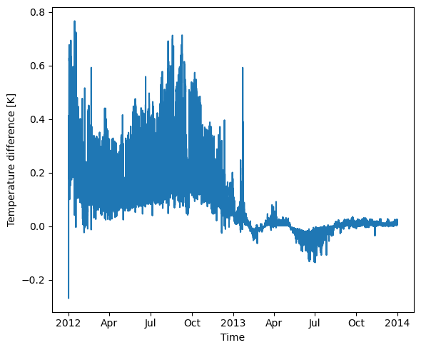

Spinup in USP mode
[1]:
from pyclmuapp import usp_clmu
import os
spinup case
Run 10 year for spinup
The default SET RUN_TYPE="coldstart", the parameters will set to be in a cold state.
[2]:
usp = usp_clmu(
pwd=os.getcwd(),)
# before running container, you need the image
# usp.docker("pull") # to pull the docker image if you don't have it
usp.docker("run") # run the docker container
usp.check_domain()
usp.check_forcing(
usr_forcing="forcing.nc")
usp_spinup = usp.run(
output_prefix= "_clm.nc",
case_name = "usp_spinup",
RUN_STARTDATE = "2002-01-01",
STOP_OPTION = "nyears",
STOP_N = "10",
RUN_TYPE= "coldstart",
iflog = True,
logfile = "log.log",
run_tyep="usp-exec"#"case", when docker container is not start)
)
usp_spinup
Folder 'inputfolder' created successfully!
Folder 'outputfolder' created successfully!
Folder 'logfolder' created successfully!
Folder 'scriptsfolder' created successfully!
Folder '/Users/user/Documents/GitHub/pyclmuapp/docs/notebooks/usp/inputfolder/usp' created successfully!
Copying the file forcing.nc to the /Users/user/Documents/GitHub/pyclmuapp/docs/notebooks/usp/inputfolder/usp
[2]:
['/Users/user/Documents/GitHub/pyclmuapp/docs/notebooks/usp/outputfolder/lnd/hist/usp_spinup_clm0_2024-09-24_13-53-43_clm.nc']
[3]:
usp.nc_view()
[3]:
<xarray.Dataset> Size: 123MB
Dimensions: (levgrnd: 25, levlak: 10, levdcmp: 1, time: 175297,
hist_interval: 2, lndgrid: 1, column: 6, gridcell: 1,
landunit: 2, pft: 6, levsoi: 20)
Coordinates:
* levgrnd (levgrnd) float32 100B 0.01 0.04 0.09 ... 28.87 42.0
* levlak (levlak) float32 40B 0.05 0.6 2.1 ... 25.6 34.33 44.78
* levdcmp (levdcmp) float32 4B 1.0
* time (time) datetime64[ns] 1MB 2002-01-01 ... 2012-01-01
Dimensions without coordinates: hist_interval, lndgrid, column, gridcell,
landunit, pft, levsoi
Data variables: (12/129)
mcdate (time) int32 701kB ...
mcsec (time) int32 701kB ...
mdcur (time) int32 701kB ...
mscur (time) int32 701kB ...
nstep (time) int32 701kB ...
time_bounds (time, hist_interval) datetime64[ns] 3MB ...
... ...
URBAN_AC (time, gridcell) float32 701kB ...
URBAN_HEAT (time, gridcell) float32 701kB ...
WASTEHEAT (time, gridcell) float32 701kB ...
WBT (time, gridcell) float32 701kB ...
Wind (time, gridcell) float32 701kB ...
ZWT (time, gridcell) float32 701kB ...
Attributes: (12/38)
title: CLM History file information
comment: NOTE: None of the variables ar...
Conventions: CF-1.0
history: created on 09/24/24 12:48:57
source: Community Land Model CLM4.0
hostname: clmu-app
... ...
ctype_urban_shadewall: 73
ctype_urban_impervious_road: 74
ctype_urban_pervious_road: 75
cft_c3_crop: 1
cft_c3_irrigated: 2
time_period_freq: minute_30startup
[4]:
usp = usp_clmu(
pwd=os.getcwd(),)
usp.check_domain()
usp.check_forcing(
usr_forcing="forcing.nc")
usp_london_start = usp.run(
output_prefix= "_clm.nc",
case_name = "usp_start",
RUN_STARTDATE = "2012-01-01",
STOP_OPTION = "nyears",
STOP_N = "2",
RUN_TYPE= "branch",
RUN_REFCASE= "usp_spinup",
RUN_REFDATE= "2012-01-01",
iflog = True,
logfile = "log.log",
run_tyep="usp-exec"#"case", when docker container is not start)
)
usp_london_start
Folder 'inputfolder' already exists.
Folder 'outputfolder' already exists.
Folder 'logfolder' already exists.
Folder 'scriptsfolder' already exists.
Folder '/Users/user/Documents/GitHub/pyclmuapp/docs/notebooks/usp/inputfolder/usp' already exists.
Copying the file forcing.nc to the /Users/user/Documents/GitHub/pyclmuapp/docs/notebooks/usp/inputfolder/usp
[4]:
['/Users/user/Documents/GitHub/pyclmuapp/docs/notebooks/usp/outputfolder/lnd/hist/usp_start_clm0_2024-09-24_13-55-48_clm.nc']
no spinup
[5]:
usp = usp_clmu(
pwd=os.getcwd(),)
usp.check_domain()
usp.check_forcing(
usr_forcing="forcing.nc")
usp_london_start_no = usp.run(
output_prefix= "_clm.nc",
case_name = "usp_start_no",
RUN_STARTDATE = "2012-01-01",
STOP_OPTION = "nyears",
STOP_N = "2",
RUN_TYPE= "coldstart",
RUN_REFCASE= "usp_spinup",
RUN_REFDATE= "2012-01-01",
iflog = True,
logfile = "log.log",
#var_add= "'Qle','Qh','Qtau','Qstor','Rnet','SWup','LWup'",
run_tyep="usp-exec"#"case", when docker container is not start)
)
usp_london_start_no
Folder 'inputfolder' already exists.
Folder 'outputfolder' already exists.
Folder 'logfolder' already exists.
Folder 'scriptsfolder' already exists.
Folder '/Users/user/Documents/GitHub/pyclmuapp/docs/notebooks/usp/inputfolder/usp' already exists.
Copying the file forcing.nc to the /Users/user/Documents/GitHub/pyclmuapp/docs/notebooks/usp/inputfolder/usp
[5]:
['/Users/user/Documents/GitHub/pyclmuapp/docs/notebooks/usp/outputfolder/lnd/hist/usp_start_no_clm0_2024-09-24_13-57-47_clm.nc']
[6]:
import matplotlib.pyplot as plt
fig = plt.figure(figsize=(6, 5))
ax = fig.add_subplot(111)
usp_london_start_no_nc=usp.nc_view(usp_london_start[0])
usp_london_start_nc=usp.nc_view(usp_london_start_no[0])
#usp_london_start_no_nc['TSA_U'].plot()
#usp_london_start_nc['TSA_U'].plot()
diff = usp_london_start_no_nc['TSA']-usp_london_start_nc['TSA']
diff.plot(ax=ax)
ax.set_ylabel('Temperature difference [K]')
ax.set_xlabel('Time')
plt.tight_layout()
plt.savefig('figs/usp_london_spinuptest.pdf', dpi=300)
plt.show()
print(usp_london_start_no_nc['TSA'].mean())
print(usp_london_start_nc['TSA'].mean())

<xarray.DataArray 'TSA' ()> Size: 4B
array(285.07147, dtype=float32)
<xarray.DataArray 'TSA' ()> Size: 4B
array(284.97766, dtype=float32)
stop and remove the container
[7]:
usp.docker("stop")
usp.docker("rm")